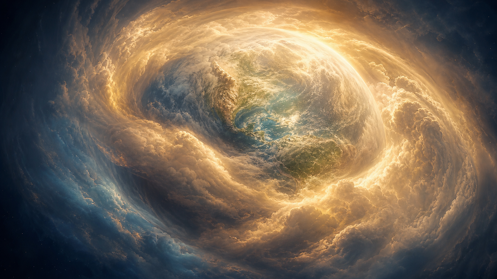
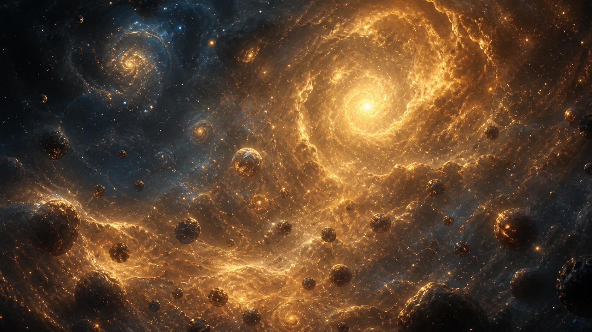
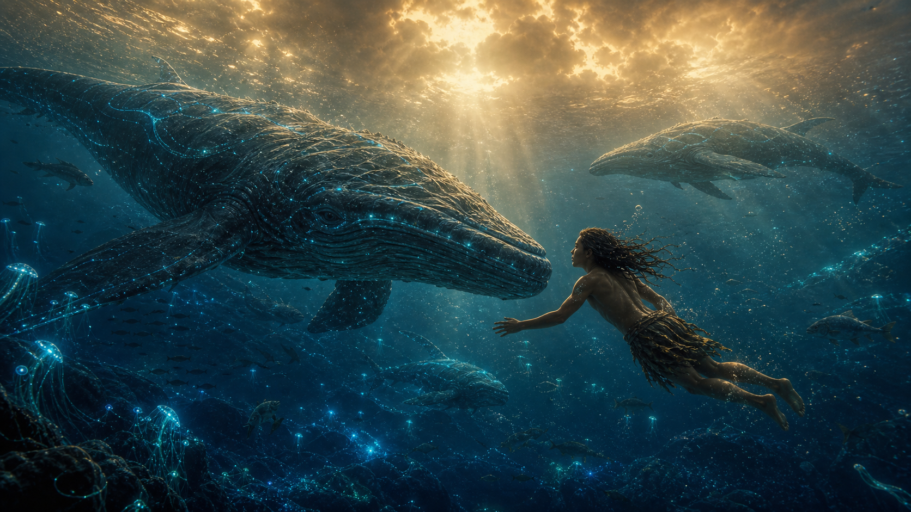
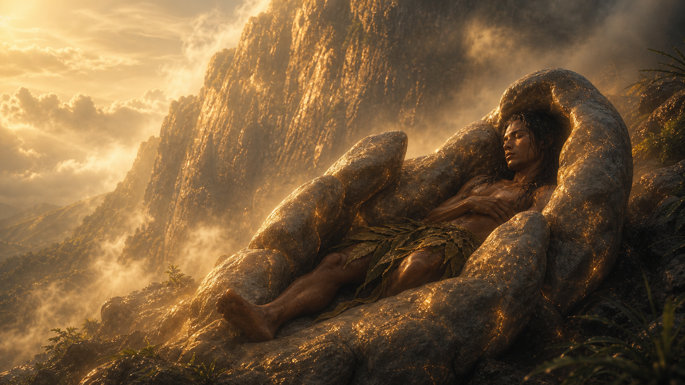
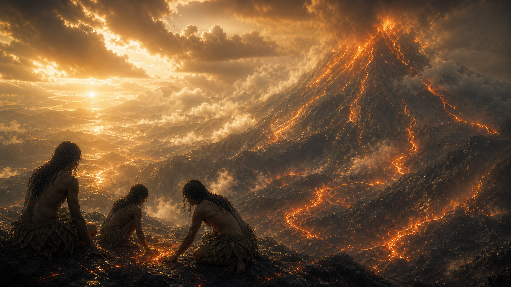

Movimiento 1
La Tierra dosificó la luz.
Antes de la noche visible, la Tierra cubrió el cielo con nubes luminosas. No ocultaba el mundo: lo cuidaba.

Universo original de Jorge Rubalcava Ríos
No estamos frente al lienzo. Estamos dentro de él. La Tierra fue madre, la materia confiaba y la conciencia aprendió que cada pensamiento, emoción y acto deja una cadencia en el Todo.
Saga audiovisual
La primera etapa muestra el mundo original y la materia que confiaba. La segunda explica amplitud, frecuencia, Reinos y Responsabilidad Frecuencial. La tercera abre una memoria nueva: el cielo infinito, las estrellas, la noche, lo seco, el sol directo y los visitantes acorazados.
Ruta de entrada
Capítulo activo
Elige un capítulo para abrirlo en YouTube o TikTok cuando esté publicado.
TikTok
Ruta TikTok
Estos TikToks funcionan como puertas cortas hacia los arcos del universo: mundo original, materia viva, cielo infinito, visitantes, símbolos, antiguos, mundo moderno y regreso.
Texto interactivo
En este universo las palabras no son adorno. Amplitud no es frecuencia; Resonancia no es control; la materia no obedece, reconoce. Cada movimiento abre una imagen y una regla para no perder la sutileza.

Movimiento 1
Antes de la noche visible, la Tierra cubrió el cielo con nubes luminosas. No ocultaba el mundo: lo cuidaba.
Continuidad
Cada capítulo tendrá salida hacia YouTube y TikTok. Mientras se publican, la página conserva el orden narrativo para que nadie confunda el cielo infinito con herida, ni a los visitantes con villanos simples.
Experiencia
Mueve el control y observa cómo una partícula aislada comienza a recordar relación hasta formar un cuerpo luminoso. Todo vibra, pero no todo elige. La conciencia ofrece cadencia y la materia participa cuando puede reconocerla.
Fondos del universo



Fundamento público
La página también debe dejar leyendo a quien llegue por los videos. Aquí está el fundamento actualizado: el libro v5, el resumen maestro para IA, la Unidad, la Fragmentación, la Resonancia, la materia viva y la responsabilidad frecuencial.
Comunidad
La historia ya tiene libro, videos, leyes y una ruta de temporada. Ahora puede crecer con lectores activos: preguntas, ideas, teorías, apoyo directo y votos sobre qué experiencia debería venir después.
Más videos largos, más libro, un juego, un mapa del universo o historias de personajes.
ResponderLa Tierra viva, los visitantes, los antiguos, las religiones, las frecuencias o el regreso.
Contar mi ideaTu apoyo ayuda a producir más videos, mejorar animaciones, preparar el libro y sostener el desarrollo de la página.